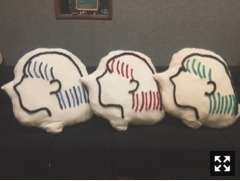

昨日はミュージックステーションにて
インフルエンサー初披露でした！
衣装の色はこの3色に加えてグリーンもあるよ
ワッペンはよく見るとNと刺繍してあるの〜
『伊藤まりかっと。』予告編公開してます！
https://youtu.be/k11r8hetTWU
装苑のトークイベントですでに
フルバージョンを公開いましたが、
今回の特典映像は個人PVです。わーい
監督は2ndのデート前日の気持ち、
5thの1カット！以来の福島真希さん。
音楽→福島節さん
振付→菅尾なぎささん
まりっかをつくってくれた
スタッフの皆さんと三度目の制作です。
17歳と21歳では吸う空気が全然違くて、
ちゃんと変われてるなと思えたけど、
変に大人ぶらなくていいな
そのままでありたいなとも思ったし、
年齢を重ねてもこの世界観を
いろんなかたちで表現していきたい
と思いました。
21歳の大切な記録であります。
ライブでいちばん盛り上がる曲(設定)
なので()内はコールすると面白いだよ！
初回限定版ジャケット
(Type-Cに収録されています)
今回のシングルは
マジで踊ってる表題とcwに加えて
底抜けに明るい個人PVで
まったく異なる自分がいて
その違いを自分でも楽しめたので
みなさんもぜひ楽しんで見てくだせい！

隅から隅まで愛情たっぷりだ
撮影秘話は次号のMdN連載で
詳しく話しました！おたのしみにヽ(ﾟ､｡)ﾉ
期間限定でフルバージョン公開中
ありがてえーーー！！
https://youtu.be/m7m0f7e7Llk
まりか